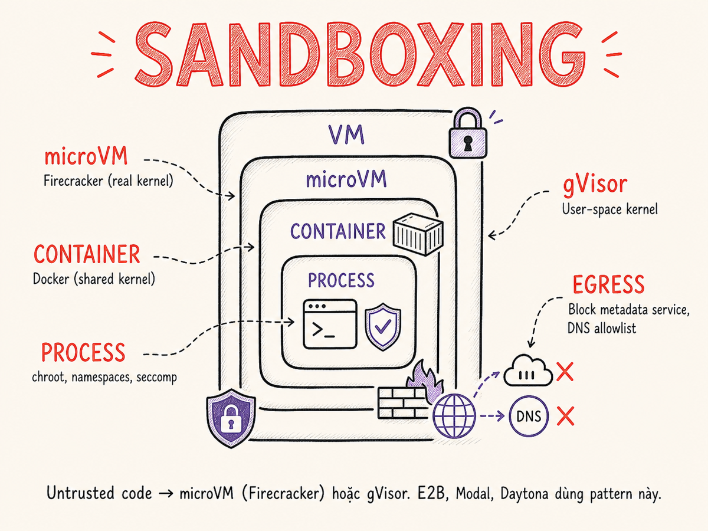

Sandboxing & Isolation cho AI Agents
AI agent có thể thực thi code, gọi tool, đọc/ghi file — tất cả đều là untrusted operations. Sandboxing là lớp bảo vệ cuối cùng: ngay cả khi agent bị compromise, tác động chỉ bị giới hạn trong một ephemeral environment không thể thoát ra ngoài.

31.1 Tại sao AI Agent cần Sandbox
Agent hiện đại không chỉ gọi LLM — chúng thực thi code do LLM tạo ra, xử lý output từ tool bên ngoài, và đọc content từ nguồn không tin tưởng (web, email, file user upload). Ba luồng nguy hiểm chính:
LLM generate Python/JS/Bash và agent thực thi trực tiếp. Code có thể chứa
os.system(), subprocess, file I/O, network calls — bất kỳ thứ gì có thể
làm trên host OS.
Agent đọc web page, PDF, email — bất kỳ trong số đó có thể chứa prompt injection instruction khiến agent thực hiện hành động độc hại ở turn tiếp theo.
MEDIUM RISKTool trả về dữ liệu từ API bên ngoài, database, hay subprocess. Kết quả có thể chứa injected data hoặc trigger side effect ngoài ý muốn nếu không được validate.
MEDIUM RISKAgent dùng thư viện Python/npm trong khi thực thi code. Một dependency độc hại có thể exfiltrate secrets, chạy cryptominer, hay tạo backdoor — tất cả trong cùng process với agent host.
HIGH RISKNếu agent thực thi code trên cùng host với application server, một code execution lỗi có thể đọc toàn bộ environment variables (chứa API keys), access network nội bộ, ghi đè file binary, và pivot sang infrastructure khác. Sandbox không phải "nice to have" — đây là prerequisite để chạy agent trong production.
31.2 Isolation Spectrum: từ process đến separate machine
Isolation không phải binary. Có một phổ liên tục từ "hơi cách ly" đến "hoàn toàn cách ly", với trade-off giữa overhead và bảo đảm bảo mật.
Với AI agent thực thi code bất kỳ: dùng microVM (Firecracker) hoặc gVisor làm minimum bar. Container thuần (Docker) không đủ cho untrusted code vì còn chia sẻ kernel. Full VM chỉ cần thiết cho compliance đặc biệt (FedRAMP, HIPAA tier-2).
31.3 Giới hạn của Container Security
Docker container là lớp isolation phổ biến nhất, nhưng có một nhược điểm cơ bản: tất cả container trên cùng host chia sẻ cùng một Linux kernel. Điều này tạo ra attack surface qua syscall interface.
Container escape vectors đã biết
| CVE / Vulnerability | Kỹ thuật | Điều kiện | Tác động |
|---|---|---|---|
CVE-2019-5736 |
runc overwrite via /proc/self/exe | Attacker có write access to any container | Host root execution |
CVE-2020-15257 |
Containerd shim API exposure | Container on host network | Privilege escalation |
CVE-2022-0185 |
Linux kernel heap overflow trong filesystem context | CAP_SYS_ADMIN hoặc user namespace | Kernel code execution |
CVE-2024-21626 |
runc process.cwd / fd leakage | Malicious image hoặc user instruction | Host filesystem escape |
| Dirty COW variants | Kernel memory race condition | Any container (unpatched kernel) | Host privilege escalation |
Bật seccomp profile và AppArmor policy giảm đáng kể attack surface — chặn các syscall nguy hiểm
như ptrace, mount, kexec_load. Nhưng zero-day kernel exploit
có thể bypass cả hai. Với untrusted code từ LLM, đây vẫn là rủi ro không chấp nhận được.
Tại sao container vẫn được dùng trong production
Container (Docker) vẫn phù hợp cho các workload semi-trusted: code do developer viết, các tool internal đã review. Vấn đề xuất hiện khi container chạy arbitrary LLM-generated code hoặc user-provided code — đây là threat model khác hoàn toàn.
OS-level primitives: Landlock + seccomp-bpf (Linux) / Seatbelt (macOS)
Khi microVM quá nặng (latency, cost), một lớp bảo vệ nhẹ hơn là kernel-level process isolation không cần root, không cần namespace. Ba cơ chế phổ biến nhất 2025–2026:
Filesystem + network access control trong kernel (Linux ≥ 5.13). Process tự áp dụng policy (unprivileged). Chặn truy cập file ngoài workspace, chặn bind socket đến port cụ thể. Không cần root. Được dùng trong Cursor agent sandbox và nhiều AI coding tools 2025.
No-root LightweightLọc syscall bằng BPF program — chặn các syscall nguy hiểm (ptrace, mount, kexec_load, perf_event_open). Kết hợp với Landlock tạo defense-in-depth cho process. Thư viện Sandlock (Python, 2026) bọc cả Landlock + seccomp-bpf + seccomp user notification trong một API.
Cùng cơ chế App Store sandbox. Dùng Sandbox Profile Language (SPL) với baseline (deny default) — allowlist từng operation. Được dùng bởi Claude Code (off by default) và các tool như agent-seatbelt, scode để ngăn agent đọc secrets ngoài project directory hoặc gọi network không kiểm soát.
OS primitives (Landlock/Seatbelt) phù hợp khi: agent chạy local trên máy developer, không thể dùng KVM, cần latency < 5ms. microVM (Firecracker) phù hợp khi: multi-tenant cloud, untrusted user code, compliance nghiêm ngặt. Không thay thế nhau — có thể dùng cả hai (defense-in-depth).
Decision guide31.4 gVisor, Kata Containers, Firecracker
gVisor — User-space Kernel
gVisor (Google, open source 2018) triển khai một Linux kernel trong user space gọi là Sentry. Khi containerized process gọi syscall, gVisor intercept và handle trong user space — không bao giờ gọi trực tiếp host kernel.
- runsc: OCI runtime thay thế runc — drop-in với Docker/containerd/Kubernetes
- Ptrace platform: dùng ptrace để intercept — portable nhưng chậm hơn
- KVM platform: hardware virtualization cho syscall interception — nhanh hơn đáng kể
- Không phải mọi syscall đều được implement — một số ứng dụng có thể không tương thích
# Chạy container với gVisor runtime
docker run --runtime=runsc \
--memory=512m --cpus=1 \
python:3.12-slim python script.py
# Kubernetes: annotate pod để dùng gVisor
# spec.runtimeClassName: gvisorDùng khi: cần drop-in replacement cho Docker với syscall isolation, không muốn overhead microVM, ứng dụng tương thích với subset syscall của gVisor.
Kata Containers — microVM Wrapper
Kata Containers (OpenInfra Foundation) chạy mỗi container trong một lightweight VM với kernel riêng, nhưng interface vẫn là OCI container chuẩn. Kết hợp tốt nhất của hai thế giới: isolation của VM, UX của container.
- Dùng QEMU, Cloud Hypervisor, hoặc Firecracker làm hypervisor backend
- Mỗi pod (Kubernetes) = một VM riêng với kernel riêng
- Boot time ~100-500ms tùy hypervisor backend
- Tương thích hoàn toàn với Kubernetes — chỉ thay
runtimeClassName
# Kubernetes với Kata (Firecracker backend)
apiVersion: node.k8s.io/v1
kind: RuntimeClass
metadata:
name: kata-fc
handler: kata-fc
---
# Pod spec
spec:
runtimeClassName: kata-fc
containers:
- name: agent-sandbox
image: agent-runner:latestDùng khi: đang chạy Kubernetes và muốn kernel isolation mà không thay đổi workflow.
Firecracker microVM
Firecracker (Amazon, 2018) là Virtual Machine Monitor (VMM) được thiết kế đặc biệt cho serverless workloads — Lambda và Fargate đều dùng Firecracker. Minimal device model: chỉ có virtio-net, virtio-blk, keyboard, serial port.
- Boot time: ~125ms đến guest OS ready
- Memory overhead: ~5MB per VM (so với ~500MB cho QEMU full VM)
- Written in Rust — memory-safe VMM, nhỏ hơn nhiều so với QEMU
- Cần KVM trên host — chỉ chạy trên bare metal hoặc nested virt enabled instances
- E2B, Modal, AWS Lambda đều dùng Firecracker
# Firecracker REST API (simplified)
# 1. Set kernel + boot args
PUT /boot-source {
"kernel_image_path": "/vmlinux",
"boot_args": "console=ttyS0 reboot=k panic=1 pci=off"
}
# 2. Set rootfs
PUT /drives/rootfs {
"drive_id": "rootfs",
"path_on_host": "/sandbox-root.ext4",
"is_root_device": true
}
# 3. Set machine config
PUT /machine-config { "vcpu_count": 1, "mem_size_mib": 256 }
# 4. Start VM
PUT /actions { "action_type": "InstanceStart" }Dùng khi: cần boot nhanh nhất có thể với true kernel isolation. Là nền tảng của hầu hết commercial AI sandbox services.
31.5 microVM Advantages — Tại sao Firecracker thắng
Firecracker microVM được thiết kế để boot nhanh, sử dụng ít tài nguyên, và có kernel isolation thực sự. Với AI agent, điều này có nghĩa là mỗi code execution request có thể có VM riêng — ephemeral, throwaway, và không thể thoát ra host.
31.6 WASM Sandboxes — Browser-grade Isolation
WebAssembly (WASM) cung cấp một loại isolation khác: capability-based. WASM module chỉ có thể làm những gì được explicitly cấp quyền — không có syscall trực tiếp, không có memory access ngoài linear memory của module.
WASI 0.2.0 (tên cũ: Preview 2) được phát hành chính thức tháng 1/2024, tích hợp
Component Model — cho phép build ứng dụng từ các Wasm components độc lập với giao diện
WIT (WebAssembly Interface Types). Bao gồm wasi-cli, wasi-sockets (TCP/UDP).
WASI 0.3 (native async I/O + Component Model) đang phát triển, RC đầu tiên cuối 2025;
WASI 1.0 stable dự kiến 2026.
Runtime WASM production-grade nhất. Dùng Cranelift JIT compiler. Hỗ trợ WASI 0.2 (Component Model) để access file, network, socket một cách controlled. Dùng trong Fastly Compute@Edge và nhiều AI sandbox.
Rust WASI 0.2 Production-readyRuntime đa nền tảng với nhiều backend compiler (Cranelift, LLVM, Singlepass). API đa ngôn ngữ (Python, Go, Java, Ruby). Wasmer Cloud cung cấp serverless WASM execution.
Multi-backend Multi-lang SDKĐược tối ưu cho edge computing và AI inference. Hỗ trợ ONNX, TensorFlow Lite natively. Được CNCF sandbox project. Dùng trong Envoy proxy và Kubernetes sidecar.
AI-optimized CNCFTiên phong trong AOT compilation cho WASM. Đã được merge hoàn toàn vào Wasmtime (không còn duy trì riêng). Chứng minh WASM có thể chạy untrusted code ở microsecond-level latency với isolation.
Merged into Wasmtime AOTTrade-offs của WASM cho AI Agents
| Tiêu chí | WASM (WASI 0.2) | Firecracker microVM |
|---|---|---|
| Isolation model | Capability-based, no syscall; Component Model enforces interface contracts | VM-level, full kernel isolation |
| Language support | Phụ thuộc WASM compilation — Python hạn chế, Rust/Go/JS tốt; C extensions vẫn là điểm yếu | Bất kỳ ngôn ngữ nào, binary bất kỳ |
| Boot/startup | Microseconds đến milliseconds | ~78–125ms (p50 E2B 78ms, cold boot 125ms) |
| Memory model | Linear memory, explicit bounds; Component Model adds type-safe inter-component calls | Full OS memory model |
| Python ecosystem | Pyodide/py2wasm — hạn chế C extensions | Full CPython, all packages |
| System calls | Chỉ qua WASI 0.2 interface — controlled; wasi-sockets cho TCP/UDP | Full Linux syscall (trong VM) |
| Use case tốt nhất | Plugin system, untrusted functions nhỏ, edge (Fastly Compute@Edge) | Full Python/bash agent execution |
Nếu agent chủ yếu chạy Python với thư viện ML/data science (numpy, pandas, PIL) — microVM là lựa chọn thực tế vì WASM vẫn hạn chế với C extensions. Nếu agent chạy Rust/Go/JS functions nhỏ hoặc cần microsecond-level latency — WASM phù hợp hơn.
31.7 Commercial Sandboxes 2026
Hệ sinh thái sandbox-as-a-service đã trưởng thành đáng kể. Dưới đây là so sánh các nền tảng phổ biến nhất trong 2026.
| Platform | Isolation Tech | Boot Time | Language Support | Persistence | Network Policy | Pricing (approx) |
|---|---|---|---|---|---|---|
| E2B | Firecracker microVM | ~78ms p50 (Jan 2026); <10ms warm | Python, Node.js, + custom images | Snapshot/restore; filesystem persist; sessions tới 24h | Egress allowlist configurable; metadata blocked | Hobby free; Pro $150/mo; ~$0.05/hr/vCPU |
| Modal Sandboxes | gVisor + container | ~200ms | Python first; custom images | Volume mounts; ephemeral default | Default open; network policy GA 2025 | $0.00006/s (CPU) |
| Daytona | Container / microVM hybrid | ~1s | Any (devcontainer spec) | Persistent workspace; git-backed | Full network access by default | $0.0025/min |
| Replit | Custom container + nsjail | ~2–5s | 50+ languages via Nix | Persistent filesystem per repl | Open by default; can restrict | $0.01/min (Autoscale) |
| Anthropic Computer Use Sandbox | Docker + VNC/display server | ~5–10s (full desktop) | Any (full Ubuntu desktop) | Volume mount; ephemeral default | Egress for web access; configurable | Self-hosted |
| OpenAI Code Interpreter (Agents SDK) | gVisor trên Kubernetes (container trong VM) | ~1–3s (container reuse giảm latency) | Python (full CPython); file upload/download | Container reuse trong session; auto hoặc explicit container ID | Outbound blocked; isolated cluster node | Tính theo token + tool call (ChatGPT/API) |
| Vercel Sandbox (2025) | microVM (gVisor-backed) | ~100ms | Node.js, Python; custom runtimes | Ephemeral; persistent volume option | Configurable egress; default restricted | Usage-based; tích hợp Vercel billing |
| CodeSandbox | microVM (Firecracker-based) | ~500ms | Node.js, Python, Rust, others | Persistent sandbox; snapshot | Open network, CDN-backed | $0.007/min |
Ví dụ: Launching an E2B Sandbox (Python)
import asyncio
from e2b_code_interpreter import AsyncSandbox
async def run_agent_code(llm_generated_code: str) -> dict:
# Tạo sandbox mới — Firecracker microVM boot ~150ms
async with AsyncSandbox(
template="python3",
timeout=30, # tự động kill sau 30 giây
metadata={"agent_id": "agent-abc123"}
) as sandbox:
# Cài package nếu cần (vẫn trong sandbox)
await sandbox.process.start_and_wait(
"pip install pandas matplotlib -q"
)
# Thực thi code từ LLM bên trong VM — không bao giờ trên host
execution = await sandbox.run_code(llm_generated_code)
return {
"stdout": execution.logs.stdout,
"stderr": execution.logs.stderr,
"results": [r.text for r in execution.results],
"error": execution.error.traceback if execution.error else None,
}
# Sandbox bị destroy tự động khi ra khỏi context manager
async def agent_loop_step(task: str, llm_client):
llm_response = await llm_client.complete(
f"Write Python code to complete: {task}\nOutput ONLY the code block."
)
code = extract_code_block(llm_response)
# Code được thực thi trong isolated Firecracker microVM
result = await run_agent_code(code)
return resultAnthropic's reference implementation cho Computer Use dùng Docker container chạy Ubuntu desktop với Xvfb virtual framebuffer, VNC server, và noVNC cho web access. Agent tương tác qua screenshot + mouse/keyboard actions. Dù dùng Docker (không phải microVM), sandbox này được thiết kế để cô lập desktop session — không phải code execution sandbox thuần túy. Cho production, bọc thêm bằng Firecracker hoặc dùng nested VM.
31.8 Network Policies cho Sandbox
Network là con đường phổ biến nhất để exfiltrate data hoặc kết nối với attacker C2 server. Ngay cả trong sandbox, network policy phải cực kỳ chặt chẽ.
Các quy tắc network policy quan trọng
169.254.169.254 là link-local address của AWS/GCP/Azure instance metadata service.
Từ đây, code trong sandbox có thể lấy IAM credentials, SSH keys, user-data, và region info
của host instance. Đây là bước đầu tiên của nhiều cloud infrastructure attack.
Chặn cả fd00:ec2::254 (IPv6 variant cho AWS).
# iptables rules cho sandbox network isolation
# Block cloud metadata service (AWS, GCP, Azure)
iptables -I OUTPUT -d 169.254.169.254 -j DROP
iptables -I OUTPUT -d 169.254.0.0/16 -j DROP
# Block host network (prevent lateral movement)
iptables -I OUTPUT -d 10.0.0.0/8 -j DROP
iptables -I OUTPUT -d 172.16.0.0/12 -j DROP
iptables -I OUTPUT -d 192.168.0.0/16 -j DROP
# DNS: only allow specific resolver
iptables -I OUTPUT -p udp --dport 53 -d 8.8.8.8 -j ACCEPT
iptables -I OUTPUT -p udp --dport 53 -j DROP
# Default HTTPS egress (kết hợp với DNS-level allowlist)
iptables -I OUTPUT -p tcp --dport 443 -j ACCEPT
# Block everything else outbound
iptables -P OUTPUT DROP
iptables -I OUTPUT -m state --state ESTABLISHED,RELATED -j ACCEPT31.9 Filesystem Policies
Filesystem isolation ngăn chặn agent đọc secrets từ host, ghi vào paths quan trọng, hoặc persist malicious artifacts qua các session.
Overlay filesystem pattern
# Overlay mount: read-only base image + ephemeral scratch layer
# Mọi write đều vào upperdir (scratch), không bao giờ chạm vào base image
mount -t overlay overlay \
-o lowerdir=/base-image,\
upperdir=/tmp/scratch-${SESSION_ID},\
workdir=/tmp/work-${SESSION_ID} \
/sandbox/rootfs
# Sau khi sandbox kết thúc: xóa scratch layer hoàn toàn
# Base image vẫn sạch cho session tiếp theo| Path / Mount | Policy | Lý do |
|---|---|---|
/ (rootfs) | Read-only base image | Ngăn ghi đè binary, sửa system files |
/tmp, /home/sandbox | Read/write (ephemeral) | Working directory cho agent code |
/proc/sys | Masked/read-only | Ngăn kernel parameter tuning |
/sys/fs/cgroup | Masked | Ngăn escape via cgroup manipulation |
/dev | Minimal devtmpfs | Chỉ cần /dev/null, /dev/urandom, /dev/tty |
| Host filesystem bind mount | NEVER | Không bao giờ bind mount host path vào untrusted sandbox |
| Shared volume (input) | Read-only bind mount | Cung cấp input data mà không cho ghi |
| Output volume | Write-only hoặc specific path | Agent chỉ ghi vào output directory được approve |
31.10 Persistence: Warm Sandboxes và Snapshot/Restore
Cold start (boot microVM từ đầu) mất ~125ms. Với agent loop có nhiều bước, overhead này cộng dồn. Các chiến lược để tối ưu:
Warm Sandbox Pool
Pre-boot N sandbox instances sẵn sàng, không có session. Khi request đến, assign sandbox ngay lập tức (<10ms). Sau khi session kết thúc, reset sandbox về trạng thái clean và trả về pool.
# Pseudocode cho warm pool manager
class SandboxPool:
min_warm = 5 # luôn có 5 sandbox sẵn sàng
max_total = 50 # không vượt quá 50 sandbox cùng lúc
async def acquire(self) -> Sandbox:
if self.warm_queue:
sb = self.warm_queue.popleft()
asyncio.create_task(self._replenish())
return sb
return await self._boot_new()
async def release(self, sb: Sandbox):
await sb.reset() # wipe scratch layer, clear state
self.warm_queue.append(sb)Snapshot/Restore
Firecracker hỗ trợ snapshot VM state (memory + disk) và restore sau ~30–70ms (2025 changelog: giảm 30–70ms nhờ pre-allocate fdtable). Dùng để:
- Lưu trạng thái sau khi đã cài packages (warm snapshot sau
pip install) - Resume session dài (agent bị interrupt, restore đúng chỗ)
- Fast clone: restore nhiều instance từ cùng snapshot (copy-on-write memory)
# Firecracker snapshot API (v1.x)
POST /snapshot/create {
"snapshot_type": "Full",
"snapshot_path": "/snapshots/agent-base-v3.snap",
"mem_file_path": "/snapshots/agent-base-v3.mem"
}
# Restore (~30–70ms vs ~125ms cold boot)
# track_dirty_pages (thay cho enable_diff_snapshots đã deprecated)
PUT /snapshot/load {
"snapshot_path": "/snapshots/agent-base-v3.snap",
"mem_backend": {
"backend_type": "File",
"backend_path": "/snapshots/agent-base-v3.mem"
},
"track_dirty_pages": true
}Session Cache
Gán persistent session ID cho agent conversation. Nếu sandbox vẫn còn alive (trong TTL), reuse thay vì boot mới. Filesystem state được giữ nguyên giữa các turns của cùng conversation.
async def get_or_create_sandbox(session_id: str) -> Sandbox:
if session_id in sandbox_cache:
sb = sandbox_cache[session_id]
if sb.is_alive():
sb.extend_ttl(minutes=5)
return sb
sb = await pool.acquire()
sandbox_cache[session_id] = sb
return sbNamespace per Agent
Mỗi agent (hay agent team) có một isolated namespace — riêng biệt về filesystem, network, và process tree. Các agent trong cùng một task có thể share namespace nhất định (filesystem) nhưng vẫn process-isolated.
# Kubernetes namespace per agent job
apiVersion: v1
kind: Namespace
metadata:
name: agent-job-${JOB_ID}
labels:
app: agent-sandbox
job-id: ${JOB_ID}
---
# NetworkPolicy: chặn cross-namespace communication
apiVersion: networking.k8s.io/v1
kind: NetworkPolicy
spec:
podSelector: {}
policyTypes: [Ingress, Egress]
egress:
- ports: [{port: 443}]
to:
- ipBlock:
cidr: "0.0.0.0/0"
except:
- "10.0.0.0/8"
- "169.254.0.0/16"31.11 Resource Limits
Ngay cả trong sandbox, agent code có thể gây DoS qua resource exhaustion — fork bombs, memory leaks, infinite loops, disk fill.
| Resource | Limit recommended | Mechanism | Tại sao |
|---|---|---|---|
| CPU | 1–2 vCPU, 50–100% quota | cgroups cpu.cfs_quota_us |
Ngăn cryptominer, infinite loop ảnh hưởng host |
| Memory | 256MB–2GB (tùy task) | cgroups memory.limit_in_bytes |
OOM killer trong VM, không ảnh hưởng host memory |
| Disk (scratch) | 500MB–5GB | Disk image size hoặc tmpfs size limit | Ngăn fill disk host, log spam |
| Process count | 50–200 processes | cgroups pids.max |
Fork bomb prevention |
| Network bandwidth | 10–100 Mbps egress | tc (traffic control) + qdisc | Ngăn exfiltration large dataset, cost control |
| Execution timeout | 30s–5min (tùy task) | SIGKILL sau timeout từ orchestrator | Infinite loop, stuck process không block pool |
| File descriptor | 1024 | ulimit hoặc cgroups | Ngăn fd exhaustion ảnh hưởng host kernel |
| Open files | 10,000 files max | inotify limit, tmpfs inode limit | Ngăn inode exhaustion trên scratch volume |
# Firecracker machine config với resource limits
PUT /machine-config {
"vcpu_count": 1,
"mem_size_mib": 512,
"smt": false
}
# Bên trong VM: cgroups v2 để giới hạn process
# (thường set trong base image hoặc entrypoint script)
cgset -r cpu.max="50000 100000" sandbox-agent # 50% CPU
cgset -r pids.max=100 sandbox-agent # 100 processes max
cgset -r memory.max=536870912 sandbox-agent # 512MB RAM hard limit31.12 Cost Comparison: Cold-start vs Warm
Chiến lược sandbox ảnh hưởng trực tiếp đến cost và latency. Đây là phân tích thực tế cho một agent thực hiện 1000 code execution requests/ngày.
| Strategy | Latency per call | Cost (E2B pricing) | Phù hợp cho |
|---|---|---|---|
| Cold start mỗi request | ~78ms p50 / ~125ms p99 overhead + exec time | ~$0.05/hr/vCPU (E2B Pro); chỉ trả khi sandbox chạy | Low-frequency, independent tasks |
| Warm pool (5 instances) | <10ms assign + exec time | Overhead: 5 × idle time; payoff ở >50 req/hr | Medium traffic, predictable load |
| Session cache (reuse sandbox) | <5ms (already running) | Billed for total session duration | Multi-turn agent conversations |
| Snapshot + restore | ~30ms restore + exec time | Storage cost (~$0.02/GB/month) + compute | Có pip install nặng, nhiều dependencies |
Nếu agent có nhiều code execution steps trong một conversation (multi-turn): dùng session cache — một sandbox, billing cho total wall time. Nếu mỗi request là độc lập (batch processing): dùng cold start hoặc warm pool tùy traffic. Snapshot có lợi nhất khi dependency installation mất >10s — amortize qua hàng trăm sessions.
31.13 Permission Model Integration với Agent Harness
Sandbox là một layer trong capability system của agent. Trong architecture hiện đại, mỗi action của agent có một capability level, và sandbox tương ứng với capability "danger-full-access" — mức cao nhất.
# Permission check trong agent harness trước khi execute tool
async def execute_tool_with_permission_check(
tool_name: str, params: dict, agent_ctx: AgentContext
) -> ToolResult:
capability_tier = TOOL_CAPABILITY_MAP[tool_name]
if capability_tier == CapabilityTier.TIER_3_EXECUTION:
# Wrap trong microVM sandbox
async with sandbox_pool.acquire() as sb:
return await sb.execute_tool(tool_name, params)
elif capability_tier == CapabilityTier.TIER_4_FULL:
# Yêu cầu human approval + isolated VM
approval = await human_approval.request(
f"Agent muốn thực hiện {tool_name} với params: {params}"
)
if not approval.granted:
raise PermissionDenied(f"{tool_name} yêu cầu human approval")
async with isolated_vm_pool.acquire() as vm:
return await vm.execute_tool(tool_name, params)
else:
# Tier 1/2: execute trực tiếp với constraints nhẹ hơn
return await tool_registry[tool_name](params)31.14 Cách cũ vs Cách hiện tại
Sự thay đổi trong cách tiếp cận sandboxing cho AI agents phản ánh bài học đau đớn từ những vụ incident sớm và trưởng thành của toàn ngành.
- Chạy LLM-generated code trực tiếp bằng
eval()hoặc inline shell call trên host server - "Sanitize" code bằng regex hoặc AST check — dễ bypass bằng obfuscation
- Dùng Docker với
--privilegedflag "vì tiện" - Network không bị giới hạn — agent có thể gọi bất kỳ URL nào
- Không có timeout — infinite loop làm treo server
- Chạy agent với credentials production trong environment variables
- "Hope nothing bad happens"
- microVM hoặc gVisor là minimum bar cho code execution trên cloud
- Landlock + seccomp-bpf (Linux) / Seatbelt (macOS) cho local agent tools — không cần root, overhead gần 0
- Ephemeral by default — mỗi session có sandbox riêng, bị destroy sau khi xong
- Observable — mọi syscall, network call, file access đều có thể được logged
- Time-limited — hard timeout với SIGKILL, không có exception
- Network egress allowlist — default deny, chỉ whitelist explicit domain
- 169.254.169.254 luôn bị block ở mọi sandbox
- Resource limits hard-coded vào sandbox template
- Tiered capabilities — sandbox chỉ được activate khi cần tier 3/4
- Human approval gate cho irreversible actions
- OpenAI Code Interpreter dùng gVisor; E2B/Modal/Vercel Sandbox là commercial options trưởng thành
Năm 2023, nhiều AI coding assistants bị phát hiện có thể bị trick để exfiltrate environment variables qua prompt injection → code generation → network call đến attacker endpoint. Năm 2024, Devin-style agents chạy trên shared infrastructure bị chứng minh có thể lateral move sang container khác qua shared kernel exploit trong điều kiện lab. Kết quả: tất cả major AI sandbox providers đều chuyển sang Firecracker microVM hoặc equivalent vào đầu 2025. Ngày nay, "sandbox-by-default" là tiêu chuẩn tối thiểu khi release bất kỳ agentic product nào ra production.
Tóm tắt
- Sandbox là prerequisite, không phải optional: AI agent thực thi code bất kỳ trên host = full system compromise nếu bị exploit. Blast radius phải được giới hạn trong ephemeral sandbox.
- Container thuần không đủ: shared kernel = shared attack surface. Dùng gVisor (user-space kernel) hoặc Firecracker microVM (~125ms boot, ~5MB overhead) làm minimum bar cho untrusted code.
- WASM / WASI 0.2: phù hợp cho functions nhỏ, latency cực thấp; Component Model (WASI 0.2 stable từ 1/2024) cải thiện composability. Python ecosystem vẫn là điểm yếu do C extensions; WASI 0.3 async đang tới.
- OS-level primitives (no-container): Linux Landlock + seccomp-bpf (không cần root) và macOS Seatbelt — phù hợp local dev, latency <5ms, defense-in-depth bên trong microVM.
- Commercial sandboxes 2026: E2B (Firecracker, ~78ms p50, $150/mo Pro), Modal (gVisor), Daytona, Replit, Vercel Sandbox, OpenAI Code Interpreter (gVisor), CodeSandbox — chọn theo boot latency, language support, và persistence model.
-
Network policy: default-deny egress, LUÔN block
169.254.169.254, DNS allowlist, không có host network bridge. - Filesystem: read-only base image, overlay scratch layer (ephemeral), không bao giờ bind mount host path vào untrusted sandbox.
- Resource limits: CPU cgroups, memory hard limit, pids.max (fork bomb prevention), hard timeout với SIGKILL.
- Warm pool + snapshot: trade-off giữa cost và latency. Session cache tốt nhất cho multi-turn agent conversations.
- Permission tiers: sandbox chỉ cần ở tier 3+ (code execution, writes, external API). Tier 4 (full system, browser) cần thêm human approval gate.